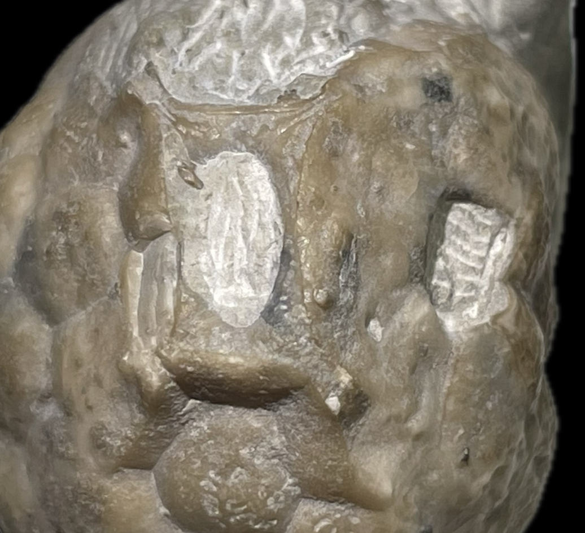
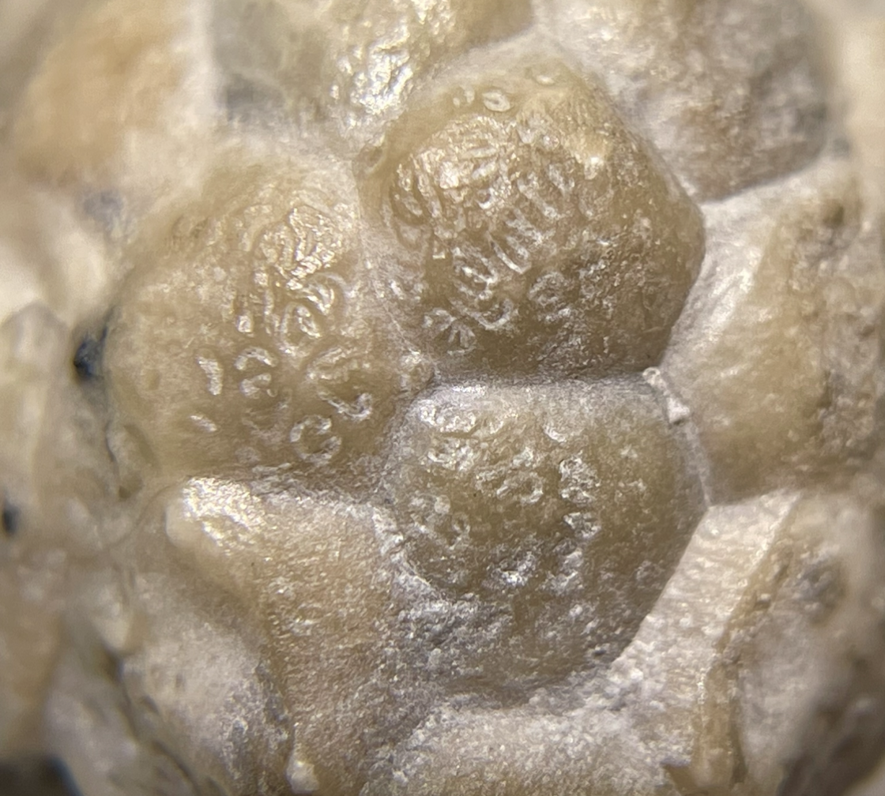
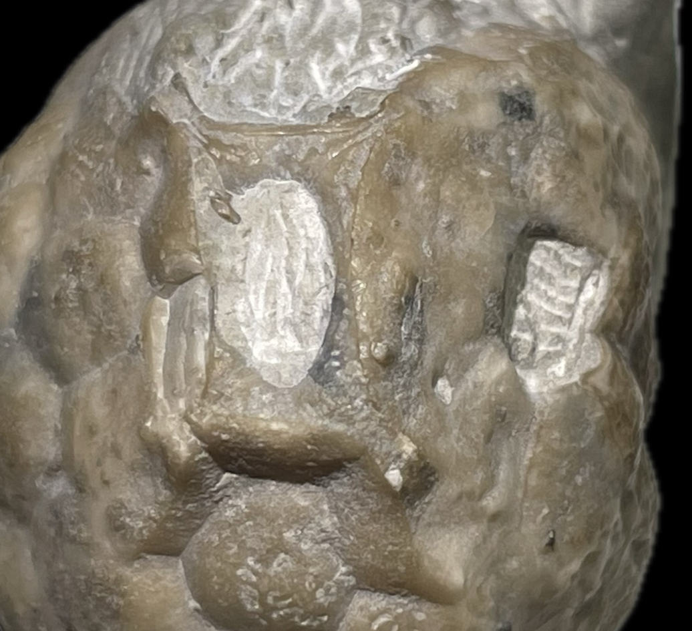
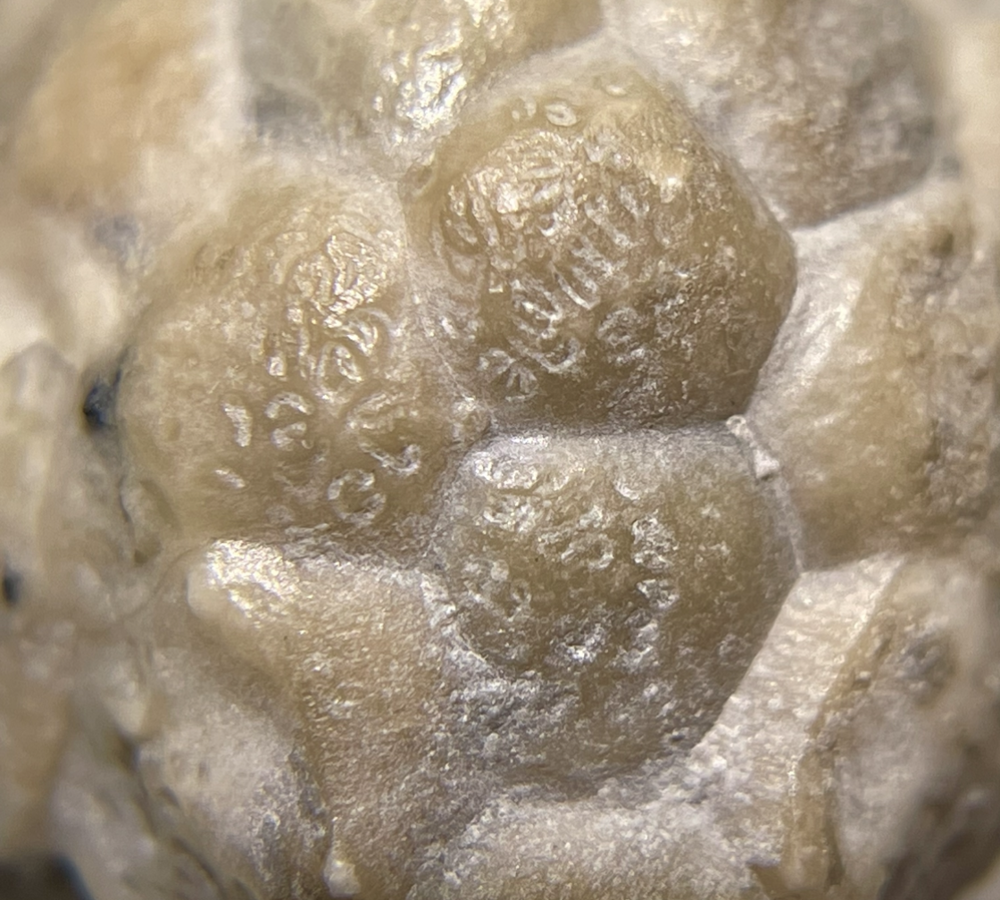

Cystoid
Paulicystis sparsus
• Silurian
• Massie (formerly Osgood) Shale
• Napoleon, Ripley County, Indiana, USA
Size: 3.5 cm
Here is an example of the second and less common species of Paulicystis, "Paulicystis sparsus", reflecting the more sparsely-distributed and discretely recognizeable respiratory channels on its thecal plates.
 
